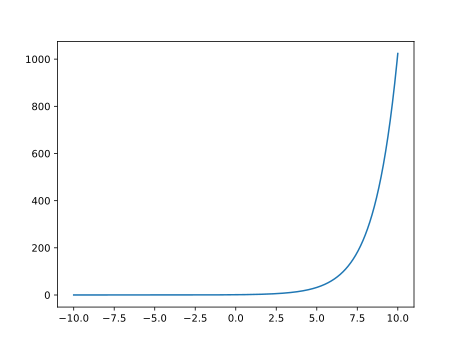
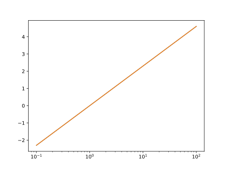
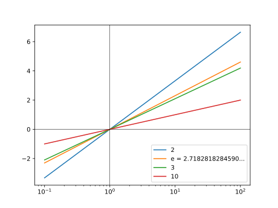

第3回：▶︎ 連続な曲線を描く
■ Jupyter notebook によるテキストの入力
Jupyter notebook のセルには、複数の種類(Cell type)がある。
既定のセルの Cell type は、Code である。 プログラム片を入力して、SHIFTキーとENTERキーを同時に押して実行すると、 出力セルに実行結果が表示される。
Cell type を Markdown に変更すると、 Markdown 記式によるテキストを入力できる。
Markdown 記式でテキストを入力し、 SHIFT+ENTERを押して実行すると、 Markdown記式で整形された文書が表示される。
Markdown記法では、空行が段落の区切りである。 空行をはさまない行替えは、前の行に続けて、同じ段落に配置される。
文字列の飾りは、たくさん使用しない方がよい。
URLリンクを書くには、次のように記述する。 [ 表示名 ]( URL )
例
[Julia 0.6 Documentation](https://docs.julialang.org/en/v0.6/)
Markdown記法では、数式を挿入することができる。 ダラー記号 $ 一つで囲まれた数式は行内数式 (inline math)、 ダラー記号 $ 二つで囲まれた数式は別行立て数式 (display math)である。 数式そのものは LaTeX 記法で記述する。 いくつか例を示す。
数式内の文字は変数とみなされ、斜体で表される。
$x+1$→ $x+1$上付き
$x^{2}$→ $x^{2}$下付き
$x_{3}$→ $x_{3}$分数
$\dfrac{a}{b}$→ $\dfrac{a}{b}$関数
$f(x) = x^{2}+1$→ $f(x) = x^{2}+1$三角関数
$\sin{x}, \tan{x}$→ $\sin{x}, \tan{x}$指数対数関数
$\exp{x}, \log{x}$→ $\exp{x}, \log{x}$テキスト内の立体 (roman style)
$a\;\mathrm{over}\;b$→ $a\;\mathrm{over}\;b$総和
$\sum_{i=0}^{m}i$→ $\sum_{i=0}^{m}i$総和を「行立て」する
$$\sum_{i=0}^{m}i$$→
積分
$\int_{0}^{1}x dx$→ $\int_{0}^{1}x dx$積分を「行立て」する
$$\int_{0}^{1}x dx$$→
カッコのペア
$\left[\left\{\left( \dfrac{1}{2} \right)\right\}\right]$→ $\left[\left\{\left( \dfrac{1}{2} \right)\right\}\right]$
▶︎ 定義域・値域
関数 $y=f(x)$ の定義域(domain)とは、 独立変数 (independent variable) $x$ の取りうる値からなる集合である。ちなみに、従属変数 (dependent variable) $y$ が取りうる値からなる集合を、値域 (range)という
本章では、 定義域が実数全体、あるいは、正の数の集合である関数について、 グラフを描いてみる。
▶︎ 正弦関数・余弦関数を描く
正弦 $y = \sin{x}$
余弦 $y = \cos{x}$
ラジアン単位
ラジアン単位の正弦、余弦 sin, cos
using PyPlot
xs=-2pi:pi/360:2pi
plot(xs, cos.(xs), label="cos")
plot(xs, sin.(xs), label="sin")
xlabel("radian")
legend()円周率単位
円周率単位の正弦、余弦 sinpi, cospi
using PyPlot
xs=-2:1/360:2
plot(xs, cospi.(xs), label="cospi")
plot(xs, sinpi.(xs), label="sinpi")
xlabel("pi")
legend()角度単位
角度単位の正弦、余弦 sind, cosd
using PyPlot
xs=-360:1:360
plot(xs, cosd.(xs), label="cosd")
plot(xs, sind.(xs), label="sind")
xlabel("degree")
legend()
ラジアンと角度との相互変換
julia> # rad2deg
rad2deg(pi/4)
45.0
julia> rad2deg(pi/2)
90.0
julia> rad2deg(pi)
180.0
julia> rad2deg(-pi/4)
-45.0
julia> # deg2rad
deg2rad(45)
0.7853981633974483
julia> deg2rad(90)
1.5707963267948966
julia> deg2rad(180)
3.141592653589793
julia> deg2rad(-45)
-0.7853981633974483▶︎ 楕円を描く
楕円を陰関数で表示すると
楕円を媒介変数表示(パラメータ曲線)すると
媒介変数表示を用いて、楕円上の各点の座標を計算する。
using PyPlot
ts=0:pi/18:2pi
xs=2*cos.(ts)
ys=sin.(ts)
plot(xs,ys)
xlim(-3,3)
ylim(-3,3)
plt[:axes]()[:set_aspect]("equal")
▶︎ アルキメデスの渦を描く
平面座標上の点 $（x,y)$は、 極座標 $(r, \theta)$ でも表示できる。 $x,y$と $r, \theta$ との対応は
である。
次の関係で結ばれた曲線を、アルキメデスの渦という。
これを描いてみよう。
using PyPlot
ts=0:pi/1800:2pi
xs=ts .* cos.(ts)
ys=ts .* sin.(ts)
plot(xs, ys)
plt[:axes]()[:set_aspect]("equal")
◀︎ 練習
上では $\theta \ge 0$ の範囲で、曲線を描いた。 パラメータ $\theta < 0$ の範囲まで含めたら、どのような曲線になるか？ 予想した上で、プログラムを書き実行し、確かめてみよ。 予想と一致していたか？
▶︎ 花曲線を描く
flower curve
using PyPlot
n=3
ts=0:pi/1800:2pi
rs=cos.(n*ts)
xs=rs .* cos.(ts)
ys=rs .* sin.(ts)
plot(xs, ys)
plt[:axes]()[:set_aspect]("equal")
▶︎ 指数関数を描く
正の数 $a > 0$を底(exponent)とする指数関数(exponential function)
底 $a=2$の場合。
using PyPlot
xs=-10:0.01:10
plot(xs, 2.^xs)
底を $2,3,4.5$と変えてみる。$x > 0$ の範囲のみ描く。
plot(xs, 2.^xs)
plot(xs, 3.^xs)
plot(xs, 4.^xs)
plot(xs, 5.^xs)
xlim(0,3)
ylim(0,100)凡例(legend）を加える。
plot(xs, 2.^xs, label="a="*string(2))
plot(xs, 3.^xs, label="a="*string(3))
plot(xs, 4.^xs, label="a="*string(4))
plot(xs, 5.^xs, label="a="*string(5))
plot(xs, 6.^xs, label="a="*string(6))
legend()
xlim(0,3)
ylim(0,100)
自然対数の底として、e と eu が定義済みである。
julia> e
e = 2.7182818284590...
julia> eu
e = 2.7182818284590...底を変えて、繰り返してみる。$a^0=1=10^0$ で、曲線が交差している。
以下は、片対数グラフで描いた。
関数 xscale, yscale は、 それぞれ x軸、y軸のスケールを指定する。 何も指定しない場合（既定値）は、線形 linear である。 log を指定すると、10の対数で、その軸を描く。
for a in [2,e,3,4,5,6]
plot(xs, a.^xs, label="a="*string(a))
end
yscale("log")
xlim(-1,3)
ylim(1e-1,1e3)
legend()底 $2, e, 10$ については、expで始まる関数が定義されている。
exp2: 底が 2 の指数関数exp: 自然対数 (底は、自然対数の底)exp10: 底が 10 の指数関数
plot(xs, exp2.(xs), label="exp2")
plot(xs, exp.(xs), label="exp")
plot(xs, exp10.(xs), label="exp10")
yscale("log")
xlim(-1,3)
ylim(1e-1,1e3)
legend()関数も名前であり、名前をつけること(=変数に代入すること）ができる。 関数のリストを作って for文で繰り返してみよう。 関数名を string関数に与えると、関数名の文字列を返す。
for f in [exp2,exp,exp10]
plot(xs, f.(xs), label=string(f))
end
yscale("log")
xlim(-1,3)
ylim(1e-1,1e3)
legend()▶︎ 平方根を描く
二乗すると$x$になる数を、$x$の平方根 (square root of $x$)という。 関数 sqrt(x)は xの平方根を求める関数である。
julia> sqrt(0)
0.0
julia> sqrt(2)
1.4142135623730951
julia> sqrt(3)
1.7320508075688772負の数 $x < 0$を関数sqrtの引数（ひきすう)に与えると、 例外（exception)が発生する。 が、複素数を引数として与えると、複素数として計算できる（複素数は、もっと後の回で説明する）。
julia> sqrt(-1) # DomainError
ERROR: DomainError:
julia> sqrt(complex(-1,0)) # 複素数を引数に与える
0.0 + 1.0im平方と平方根を同じグラフに描いてみよう。 直線 $y=x$ に対して、鏡の関係になっている。
using PyPlot
xs=0:0.01:3
plot(xs, xs.^2, label="square")
plot(xs, sqrt.(xs), label="square root")
plot(xs, xs, "k", lw=0.5, label="y=x")
xlim(-0.2,2.2)
ylim(-0.2,2.2)
xlabel("x")
ylabel("y")
legend()
plt[:axes]()[:set_aspect]("equal")▶︎ 立方根を描く
三乗すると$x$になる数を、$x$の立方根 (cube root of $x$)という。 関数 cbrt(x)は xの立方根を求める関数である。
立方と立方根を同じグラフに描いてみよう。 直線 $y=x$ に対して、鏡の関係になっている。
using PyPlot
xs=0:0.01:3
plot(xs, xs.^3, label="cubic")
plot(xs, cbrt.(xs), label="cube root")
plot(xs, xs, "k", lw=0.5, label="y=x")
xlim(-0.2,2.2)
ylim(-0.2,2.2)
xlabel("x")
ylabel("y")
legend()
plt[:axes]()[:set_aspect]("equal")平方と平方根、立方と立方根を、同じグラフに描こう。 点$(1,1)$で、曲線が交差している。
using PyPlot
xs=0:0.01:3
plot(xs, xs.^2, label="square")
plot(xs, sqrt.(xs), label="square root")
plot(xs, xs.^3, label="cube")
plot(xs, cbrt.(xs), label="cube root")
plot(xs, xs, "k", lw=0.5, label="y=x")
legend()
xlim(-0.2,2.2)
ylim(-0.2,2.2)
xlabel("x")
ylabel("y")
plt[:axes]()[:set_aspect]("equal")平方根と立方根の関数のリストを作って for文で繰り返してみよう。 （結果のグラフは、上と同じなので省略する）
using PyPlot
xs=0:0.01:3
for f in [ sqrt, cbrt]
plot(xs, f.(xs), label=string(f))
end
legend()
xlim(-0.2,2.2)
ylim(-0.2,2.2)
xlabel("x")
ylabel("y")
plt[:axes]()[:set_aspect]("equal")▶︎ 冪乗根を描く
一般に、正数 $x > 0$ と $2$以上の整数$n$ に対して、$y^n = x$ の解、 すなわち、$y = \sqrt[n]{x} = x^{\frac{1}{n}}$を、$x$の$n$乗根 (root of $n$-th power, $n$-th root)という。$n$を指定せずに、冪乗根（べきじょうこん）あるいは冪根（べきこん）と総称する。 「冪」の代わりに「巾」の略字を当てることもある。
PyPlotパッケージに用意された関数 axvline()で垂直線 (vertical line)を描く。引数は、前回説明した関数 axhline (水平線を描く)と同じである。
using PyPlot
xs=0:0.01:3
plot(xs, xs.^(1/2), label="n=2")
plot(xs, xs.^(1/3), label="n=3")
plot(xs, xs.^(1/4), label="n=4")
plot(xs, xs.^(1/5), label="n=5")
legend()
xlim(-0.2,2.2)
ylim(-0.2,2.2)
axhline(1, color="k", lw=0.5)
axvline(1, color="k", lw=0.5)
plt[:axes]()[:set_aspect]("equal")
指数$n$で繰り返してみる。
using PyPlot
xs=0:0.01:10
for n in 2:5
plot(xs, xs.^(1/n), label="y=x^(1/" * string(n) *")" )
end
legend()
xlabel("x")
ylabel("y")
xlim(0.1,10.)
ylim(0.1,10.)
xscale("log")
yscale("log")
axhline(1, color="k", lw=0.5)
axvline(1, color="k", lw=0.5)▶︎ 自然対数
正の数 $x>0$に対して、$x=e^y$ を満たす数 $y$を、$x$の自然対数 (natural logarithm of $x$、Napierian logarithm、あるいは単に、logarithm）といい、$\log{x}$ と書く。
関数 log(x)は、自然対数を求める関数である。
julia> log(1)
0.0
julia> log(e)
1
julia> log(e^2)
2.0
julia> log(-1) # DomainError
ERROR: DomainError:線形グラフで描いてみる。
using PyPlot
using PyPlot
xs=0.1:0.01:100
0.1:0.01:100.0
plot(xs, log.(xs))片対数グラフで描いてみる。$x$軸を対数で表示すると、直線で表示される。
plot(xs, log.(xs))
xscale("log")
▶︎ 対数関数
正の数 $a$に対して、$x=a^y$ を満たす数$y$を、底$a$に対する $x$の対数 ( logarithm of $a$ to base b; base $a$ logarithm of $x$）といい、$\log_{a}{y}$と書く。
関数 log(a,y)のように、引数（ひきすう）二つを与えると、 底 $a$に対する $x$の対数が得られる。
片対数グラフを描く。$\log_{a}{1}=0$で曲線が交差する。
plot(xs, log.(2,xs), label=string(2))
plot(xs, log.(xs), label=string(e))
plot(xs, log.(3,xs), label=string(3))
plot(xs, log.(10,xs), label=string(10))
xscale("log")
axhline(0, color="k", lw=0.5)
axvline(1, color="k", lw=0.5)
legend()
底をfor文で変えてみる。
for a in [2, e, 3, 10]
plot(xs, log.(a,xs), label=string(a))
end
xscale("log")
axhline(0, color="k", lw=0.5)
axvline(1, color="k", lw=0.5)
legend()底 $2$と$10$ に対しては、関数 log2と log10 が用意されている。
plot(xs, log2.(xs), label="log2")
plot(xs, log.(xs), label="log")
plot(xs, log10.(xs), label="log10")
xscale("log")
legend()
axhline(0, color="k", lw=0.5)
axvline(1, color="k", lw=0.5)関数名で繰り返してみる。
for f in [log2, log, log10]
plot(xs, f.(xs), label=string(f))
end
xscale("log")
legend()
axhline(0, color="k", lw=0.5)
axvline(1, color="k", lw=0.5)▶︎ ダブルYグラフを描く
ダブルYグラフは、 $x$軸を共通として、左と右に、二つの $y$軸を配置するグラフである。
これを描くには、次の手順をとる。 まず、以下のように、 元となる座標系(左$y$軸)のデータ（オブジェクト）ax1を取得する。
fig=plt[:figure]()
ax1=fig[:add_subplot](111)次に、以下のように、 $x$軸が共通な、新しい座標系(右$y$軸)のデータ（オブジェクト）ax2を作成する。
ax2=ax1[:twinx]()座標系 axに対して描画するには、ax[:plot](<<plot引数>>) の形式を用いる。
using PyPlot
xs=-2:0.1:2
fig=plt[:figure]()
ax1=fig[:add_subplot](111)
ax1[:plot](xs, -xs, "r")
ax2=ax1[:twinx]()
ax2[:plot](xs, xs.^2, "b")▶︎ 自由落下運動を描く
(力学の問題)
鉛直上向きに投げられた球が、重力のみを感じて自由落下するとする。 時刻 $t=0$において、高さ $y=0$, 鉛直上向きの速度 $v_0$ とすると、 時刻 $t$における、高さ $y$と 鉛直上向きの速度 $v$ は、以下のように表される。
各時刻の速度を描く。 長さの単位としてメートル m、 時間の単位として秒 s を、(組立て単位を含めて)一貫して用いる。
重力加速度 $g = 9.8\;\mathrm{m/s^2}$
初速度を $v0 = 10\;\mathrm{m/s}$ としよう。
各時刻の速度を描く。
using PyPlot
v0=10 # m/s
g=9.8 # m/s^2
ts=0:0.1:3 # s
vs=v0-g*ts
plot(ts,vs)各時刻の高さを描く。
ys=v0*ts-g*ts.^2/2
plot(ts,ys)
この二つのグラフを、時刻を、共通の横軸にとって描こう。
ax1=plt[:subplot]()
ax2=ax1[:twinx]()
ax1[:plot](ts,vs)
ax2[:plot](ts,ys)
各軸に対して、描画範囲を指定する。 各軸オブジェクトに対して関数 set_xlim または set_ylim を用いる。 (関数 xlim または ylim は、軸オブジェクトに対して用いない)
共通な下軸に対しては、元の軸オブジェクト $ax1$に対して指定する。 左軸、右軸は、各軸のオブジェクトに対して指定する。
各軸にラベルをつけるには、 各軸オブジェクトに対して関数 set_xlabel または set_ylabel を用いる。 (関数 xlabel または ylabel は、軸オブジェクトに対して用いない)
ax1[:set_xlabel]("time / s")
ax1[:set_xlim](-0.3,2.3)
ax1[:set_ylim](-12,12)
ax2[:set_ylim](-6,6)
ax1[:set_ylabel]("velocity / m s^-1")
ax2[:set_ylabel]("height / m")各軸に対して、水平線 axvline や垂直線 axvline を描く。
時刻 $\dfrac{v0}{g}$ で、速度が 0 となり、最大の高さを取る様子が見える。
ax1[:axvline](v0/g, color="k", lw=0.5)
ax1[:axvline](0, color="k", lw=0.5)
ax1[:axhline](0, color="k", lw=0.5)◀︎ 練習
初速度 v0 を変えて描いてみよ。
▼▶︎ ダブルYグラフに共通な凡例の作成
複数軸に共通な凡例を描くには、技巧が少々必要である。
まず、前節のプログラムをまとめて書こう。 二つの曲線に、色を指定しよう。
using PyPlot
ax1=plt[:subplot]()
ax2=ax1[:twinx]()
ax1[:plot](ts,vs, "b", label="velocity")
ax2[:plot](ts,ys, "r", label="height")
ax1[:set_xlabel]("time / s")
ax1[:set_xlim](-0.3,2.3)
ax1[:set_ylim](-12,12)
ax2[:set_ylim](-6,6)
ax1[:set_ylabel]("velocity / m s^-1")
ax2[:set_ylabel]("height / m")
ax1[:axvline](10/9.8, color="k", lw=0.5)
ax1[:axvline](0, color="k", lw=0.5)
ax1[:axhline](0, color="k", lw=0.5)各軸に含まれる曲線の形状と凡例を、 get_legend_handles_labels 関数を用いて、取り出す。
二つの軸に含まれる形状と凡例を、それぞれ結合する。 片方の軸に対して、結合した形状と凡例を追加する。
lns1, lbl1 = ax1[:get_legend_handles_labels]()
lns2, lbl2 = ax2[:get_legend_handles_labels]()
lns = [ lns1; lns2 ]
lbls = [ lbl1; lbl2 ]
ax2[:legend]( lns, lbls, loc=0)◀︎ 練習
初速度 v0を、色々変えてプロットしてみよ。
▶︎ 複数のグラフを描く
花曲線の例で $n$を変えてみる。
グラフのプロット領域を分割するには、以下の命令を用いる。
ax=plt[:subplot](ijk)
ijk は３桁の整数である。 百の位 iは、縦方向の分割数、 十の位 jは、横報告の分割数である。 一の位は、取得するプロット番号であり、 左から右、上から下に、1から順に振られる。
using PyPlot
ts=0:pi/1800:2pi
for i=1:6
n=i+2
ax=plt[:subplot](330+i)
rs=cos.(n*ts)
xs=rs .* cos.(ts)
ys=rs .* sin.(ts)
ax[:plot](xs,ys)
ax[:set_xlim](-1,1)
ax[:set_ylim](-1,1)
ax[:set_aspect]("equal")
end◀︎ 練習：斜めに飛ばした球の軌跡
(力学の問題)
鉛直上向きに対して 角度 $b$をつけて投げた球が、重力のみを感じて運動するとき、その球の軌跡を描け。
最初は $b = 15^{\circ}$として描け。
次に、角度$b$を変えた場合を、一つのグラフに示せ。
余裕があれば、Jupyter NotebookのMarkdownセルを用いて、解き方や式などの文飾を加えよ。
◀︎ 練習
ここまで紹介した関数を使って、色々な連続曲線を描いてみよ。 Jupyter notebookの Markdownセルを用いて、説明文も加えよ。
★ 今回のまとめ
Jupyter Notebookを用いたテキスト入力 (Markdownセル)
実数全域で定義された関数
正弦・余弦関数
楕円
極座標で著された曲線
アルキメデスの渦
花曲線
指数関数
正数を定義域とする関数
平方根・立方根・冪乗根
対数関数
複数のグラフを描く方法
ダブルYグラフ
ダブルYグラフに共通な凡例の作成
プロットエリアの分割